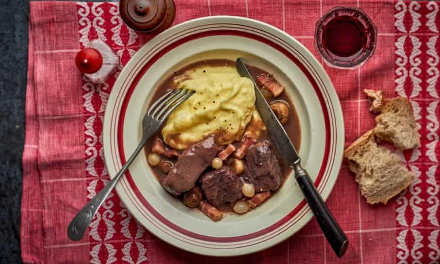

Boeuf à la bourguignonne

This is a favourite among those carefully composed, slowly cooked dishes which are the domain of French housewives and owner-cooks of modest restaurants rather than of professional chefs. Generally supposed to be of Burgundian origin (although Alfred Contour’s Cuisinier Bourguignon gives no recipe for it) boeuf à la bourguignonne has long been a nationally popular French dish, and it is often referred to, or written down on menus, simply as “bourguignon”. Such dishes do not, of course, have a rigid formula, each cook interpreting it according to her taste, and the following recipe is just one version. Incidentally, when I helped in a soup kitchen in France many years ago, this was the dish for feast-days and holidays.
For the garnish
Cut the meat into slices about 2½ inches square and ¼ inch thick. Put them into a china or earthenware dish, seasoned with salt and pepper, covered with the large sliced onion, herbs, olive oil and red wine. Leave to marinate from 3 to 6 hours.
Put a good tablespoon of beef dripping into a heavy stewing-pan of about 4 pints capacity. In this melt the salt pork or bacon, cut into ¼ inch thick match-length strips. Add the whole peeled small onions, and let them brown, turning them over frequently and keeping the heat low. Take out the bacon when its fat becomes transparent, and remove the onions when they are nicely coloured. Set them aside with the bacon. Now put into the fat the drained and dried pieces of meat and brown them quickly on each side. Sprinkle them with the flour, shaking the pan so that the flour amalgamates with the fat and absorbs it. Pour over the strained marinade. Let it bubble half a minute; add the stock. Put in a clove of garlic and a bouquet of thyme, parsley and bay leaf tied with a thread. Cover the pan with a close-fitting lid and let it barely simmer on top of the stove for about 2 hours.
Now add the bacon and onions, and the whole mushrooms washed but not peeled and already cooked in butter or dripping for a minute or so to rid them of some of their moisture. Cook the stew another half-hour. Remove the bouquet and garlic before serving.